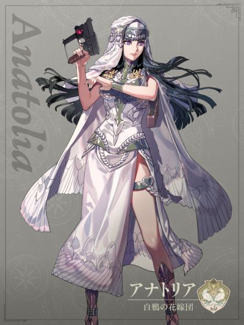

COMPANION DOSSIER
阿纳托莉娅
アナトリア · 月之谎 / 白鸦新娘团 / 其他
检索别名：阿纳托利亚 / 阿纳托莉娅 / 爱娜特莉亚
喜欢什么，送什么
八卦占卜套装 、罕见书籍与时尚用品
喜欢的东西：八卦占卜、圆形之物
查看送礼原文与例外 →第一部 · 各路线加入条件
原手册未提供此角色的四路线招募表。
查看招募原文与附加说明 →交涉要准备什么
本批尚未独立核对该角色交涉流程。先看上方原表的物品、金钱、外传与 S／R 门槛；没有写出明细不代表无条件加入。
怎么养，怎么转职
编辑培养建议
高速黑魔法输出／魔力型 Blaze Arts
- 前期
- 这里的早期指第三部实际入队后。先沿现有魔法兵种投入黑魔术，承担安全削血与收尾，不必倒回初级职业重练。第一部须先完成个人外传；她不是四线自由招募角色，加入前继续培养现有法师。
- 中期
- 训练较集中的方案是先知 → 德鲁伊。以黑魔术为主，格斗仅在已有合适装备和实际对位时补充；不要因格斗是得意技能，就把魔力型角色改成纯力量培养。选择攻击时比较命中、射程与战斗预测，不只看面板魔力。
- 后期目标
- 优先德鲁伊，利用黑魔法次数翻倍与装备魔法时命中 +7 持续输出。Blaze Arts 也以魔力为基础并消耗 HP；按当前可用招式、剩余 HP 和敌方反击范围出手，给治疗者留出恢复机会。
- 考试与解锁
- 德鲁伊按黑魔术 A 备考，并确认最上级考试已开放、备有相应考试票证与足够通过率。技能等级是备考方向，不代表到 A 就能无条件转职；未开放时继续使用现有魔法兵种。
- 取舍与限制
- 个人技能只提供回避 +3；「連貫円滑+」须成功回避攻击才回复自身 10 HP，不能当作稳定续航。她的天柱型在攻击时增加 Blaze 槽，装备咒宝战斗则会减少；以 Arts 为核心时先检查装备。已有成熟法师且资源紧张，可先让她承担补位，无须立刻分散训练去兼修骑乘与白魔术。
这些是阶段性培养方向，并非必须逐级转职的固定链。适用难度及版本未做独立实测；优先满足当前队伍缺口。
本次新增条目经过来源页面核对，未逐项游戏内实测。没有补充明细的“交涉”仍待核验，不表示没有额外要求。